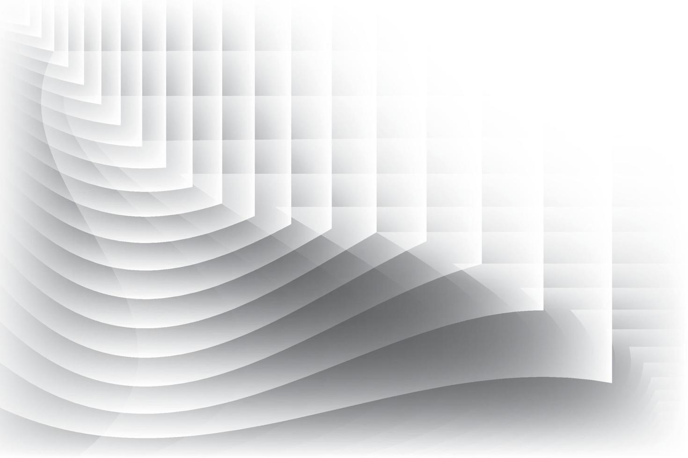

ABOUT ME !
Bienvenue !
Je m'appelle Porteboeuf Thierry. Je suis actuellement en BAC +2 technicien informatique systèmes et réseaux.
En reconversion professionnelle, j'ai eu l'opportunité de pouvoir reprendre les études afin de pouvoir exercer le métier qui me passionne depuis toujours grâce à l'école OpenClassrooms qui propose, des formations en alternance au sein des métiers de l'IT.
Entamant ce parcours depuis le 15 Avril 2023, ce dernier se terminera donc le 16 Avril 2024.
Fiducial Informatique a su m'ouvrir ses portes afin de me former pratiquement à ce métier.
Le but de ce portfolio est donc une annexe de mon curriculum vitae, afin de pouvoir continuer à apprendre.
Car effectivement, à l'issue de ma formation actuelle, je souhaiterais poursuivre mes études sur un BAC +4 Administrateur systèmes et réseaux.
Je vous laisserai donc à vous, lecteurs, parcourir cette page web afin de vous faire valoir les compétences que j'ai pu obtenir lors de mon année en BAC +2 autant en pratique chez Fiducial qu'en théorique chez OpenClassrooms.
Que serait-ce portfolio sans vous parler un peu de mes motivations ?
En soif d'apprentissage par ce métier qui me passionne et en rage de motivation de pouvoir poursuivre mes études, je suis donc quelqu'un de motivé, rigoureux, autonome et organisé afin d'intégrer votre entreprise pour que vous puissiez m'apprendre ce futur métier.
Très à l'écoute et ayant le sens du détail, la relation client ainsi que collaborateur est pour moi primordial afin de pouvoir tirer à profit la meilleure solution possible à chaque problématique.
Je vous laisse dès à présent découvrir qui suis-je et ce que je sais faire.
Bonne lecture.